Conversação
A técnica dos intérpretes para aprender inglês 5x mais rápido: 15 minutos por dia, com correção de pronúncia som por som.
Veja como é por dentro
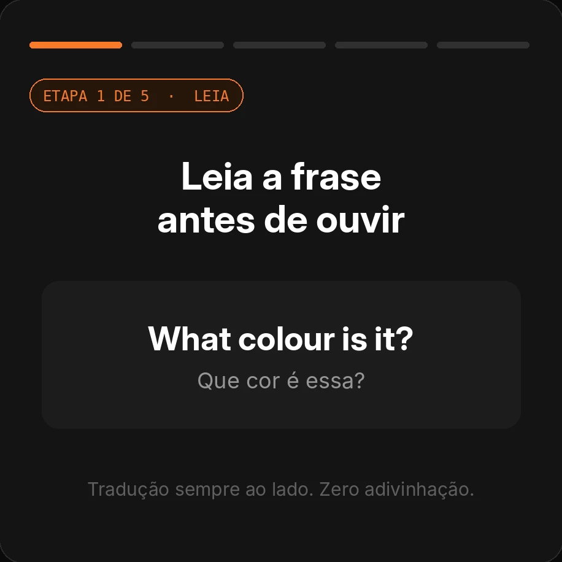
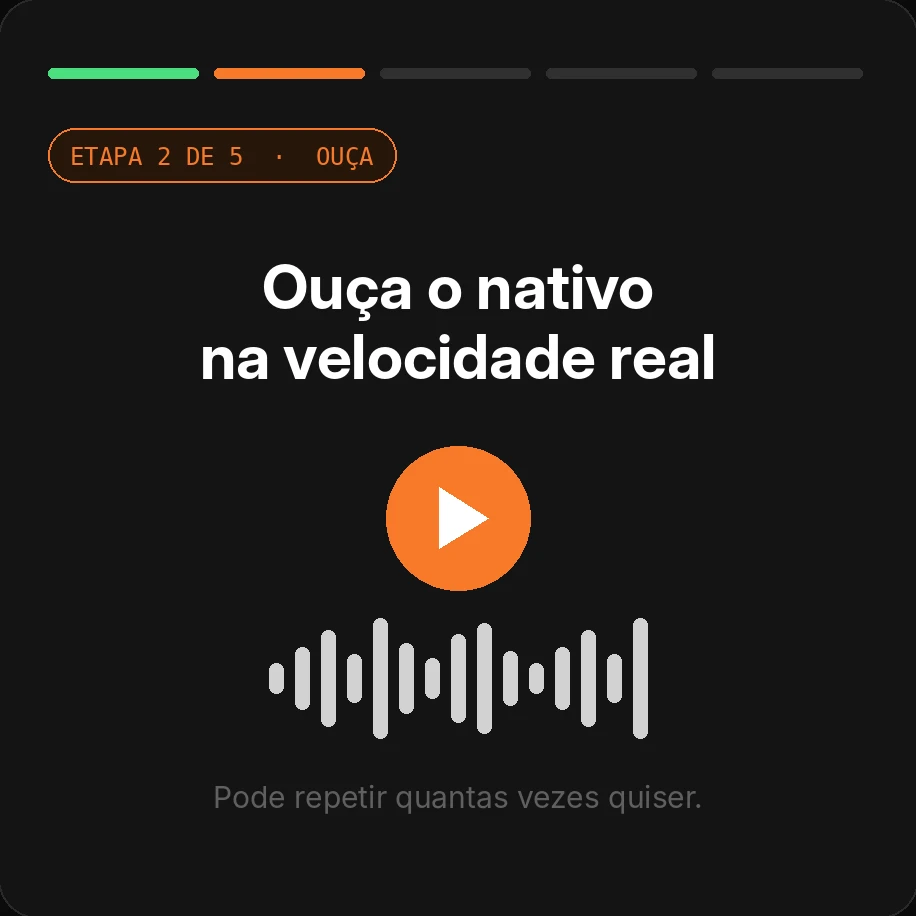
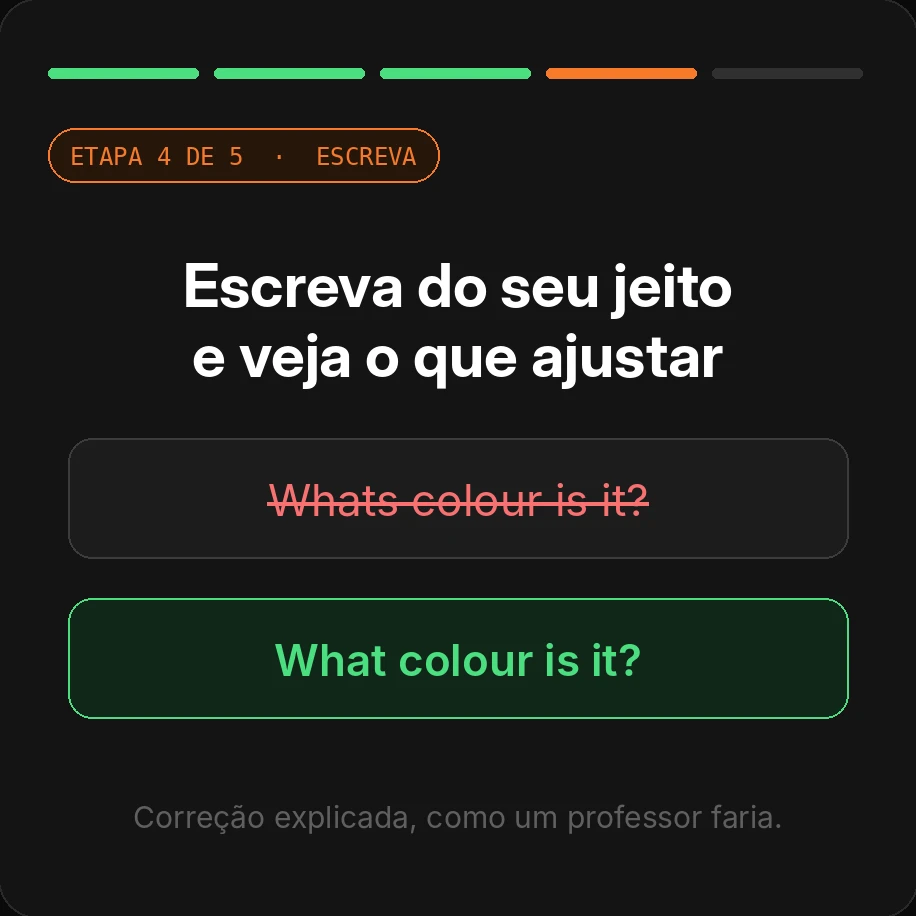
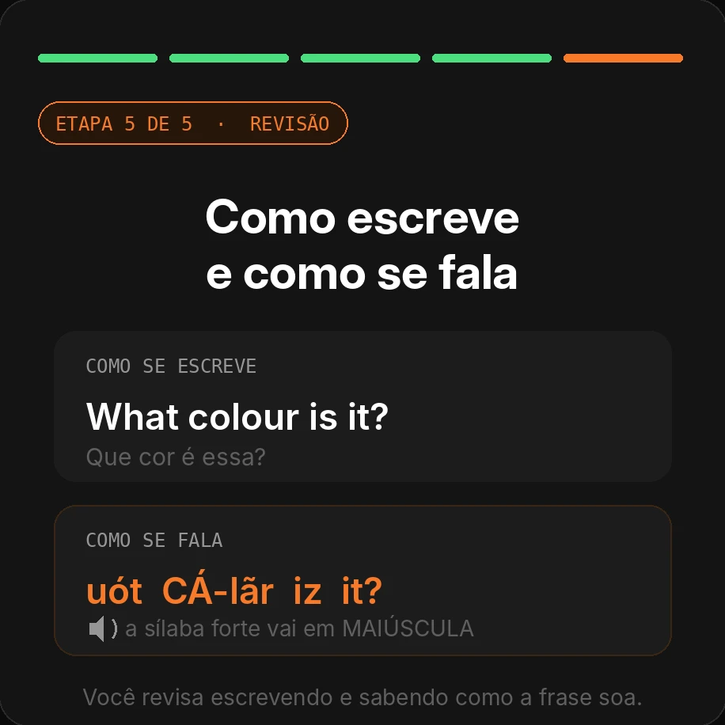
Eu sei… você adia o inglês mais um dia e se pega pensando:
"Entendo quase tudo, mas na hora de falar eu travo."
"Estudo inglês há anos e continuo no básico."
"Medo de viajar e não conseguir me virar."
"A vaga pedia inglês fluente."
"Fico calado nas reuniões."
É horrível se sentir assim, né?
Você já tentou de tudo: aplicativo de idiomas, curso online,
professor particular, série com legenda…
Mas na hora de falar, a frase não sai.
A verdade é que…
O problema NÃO é você, nem sua idade, nem 'falta de dom'. Você só nunca treinou a fala do jeito certo. E o jeito certo é simples: ouvir e repetir em voz alta, um pouquinho todo dia.
E para destravar sua fala em 15 minutos por dia, veja o que você vai receber:
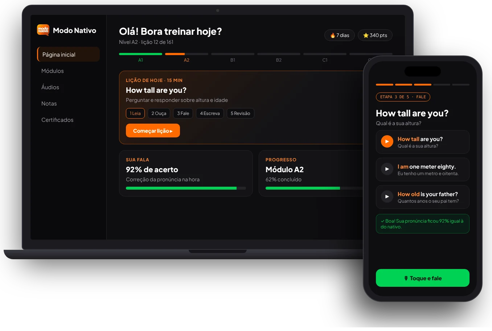
Curso Modo Nativo: Do Zero à Conversação
Você recebe o caminho completo do A1 ao C2, em lições de 15 minutos com as 5 etapas: ler, ouvir, falar, escrever e revisar. São 805 aulas práticas com as frases que você mais vai usar, com correção da fala e da escrita na hora.
- Acesso imediato, direto no navegador
- Do A1 ao C2, liberado por nível
- Revisão espaçada que traz a frase de volta
- Certificado de curso livre a cada nível concluído
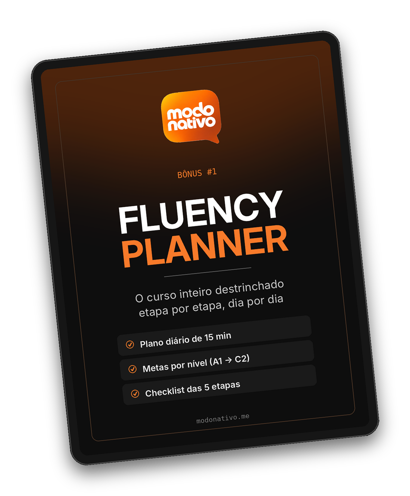
Fluency Planner
O curso inteiro destrinchado em um planner: o que treinar a cada dia, o que esperar de cada etapa e as metas de cada nível. É o mapa que você usa ao lado do curso para não se perder e não parar no meio.
- Plano diário de 15 minutos
- Metas por nível, do A1 ao C2
- Checklist das 5 etapas de cada lição
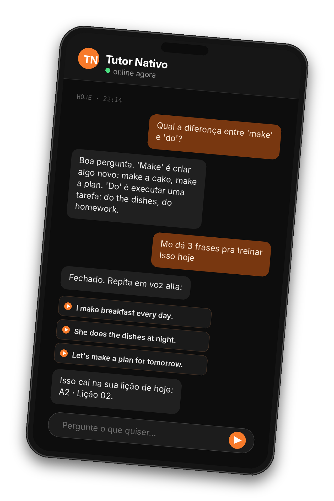
Tutor Nativo
Um tutor de inglês com IA dentro da plataforma, disponível a qualquer hora. Tire a dúvida na hora em que ela aparece, peça mais exemplos e ele ainda te diz qual assunto e qual lição treinar em seguida.
- Dúvidas respondidas na hora, 24h por dia
- Explicação simples, com exemplos para repetir em voz alta
- Indica o próximo assunto e a próxima lição a treinar
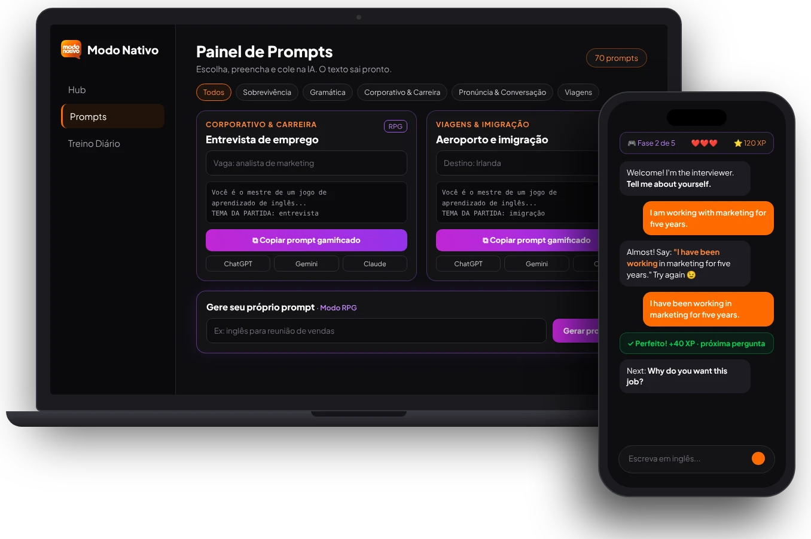
Painel de Prompts
Prompts prontos para treinar inglês dentro do ChatGPT, do Claude ou do Gemini. É só escolher a situação, copiar e colar no chat que você já usa. Pronto: ele vira o seu parceiro de treino, com jogos, pontos e ofensiva para você querer voltar todo dia.
- Prompts por situação: entrevista, viagem, reunião, restaurante
- Modo jogo com pontos, níveis e ofensiva diária
- Funciona no ChatGPT, Claude ou Gemini
CV Bilíngue
Você preenche seus dados uma vez e a ferramenta monta o currículo em português e em inglês, já no padrão que o mercado espera. Você baixa em PDF para imprimir ou leva direto para o seu LinkedIn. E finalmente se candidata àquela vaga, aqui ou lá fora, sem vergonha do seu currículo.
- Currículo em português e em inglês
- PDF pronto para imprimir ou enviar
- Leva para o seu perfil do LinkedIn
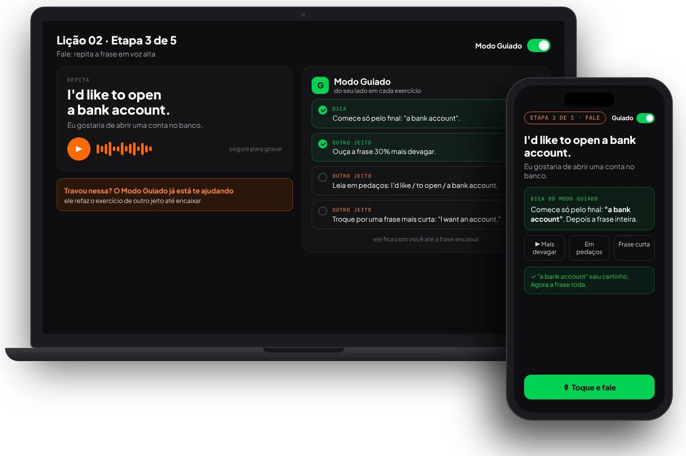
Modo Guiado
Está começando do zero e trava no primeiro exercício? Liga o Modo Guiado e ele fica do seu lado: dá a dica na hora certa e refaz o mesmo exercício de outras formas, mais devagar, em pedaços ou com uma frase mais curta, até a sua boca aprender. Ninguém fica para trás por achar difícil.
- Um botão: liga e desliga quando você quiser
- Dica na hora em que você trava
- Refaz o exercício de outras formas até encaixar
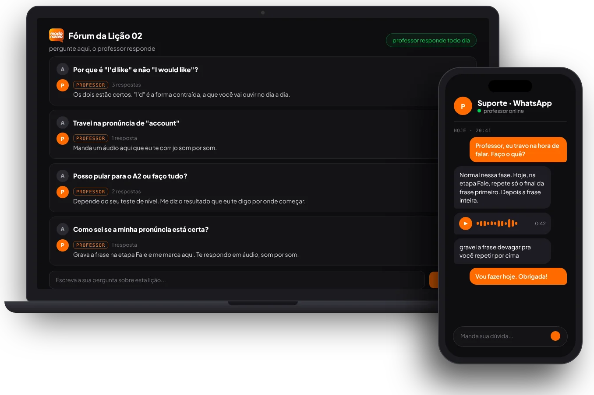
Suporte Humanizado
Aqui tem gente do outro lado. Travou numa lição, não entendeu uma frase, quer saber se a sua pronúncia está certa? Pergunta no fórum da própria lição ou chama no WhatsApp. Quem te responde é um professor de verdade, não um robô.
- Fórum dentro de cada lição
- WhatsApp com professor de verdade
- Resposta em texto ou áudio corrigindo sua fala
Com 15 minutos por dia, você vai:
Falar frases inteiras sem travar no meio
Entender série e música sem depender da legenda
Perder o medo de falar com gringo
Ter a sua pronúncia corrigida na hora, todo dia
Se candidatar à vaga que pede inglês
Viajar e se virar sozinho sem tradutor
O Modo Nativo é para você que…
Entende quase tudo, mas trava na hora de falar.
Já começou várias vezes e sempre volta pro verbo to be.
Tem vergonha de errar na frente dos outros.
Estuda só gramática e nunca abre a boca.
Já perdeu vaga ou promoção por não falar inglês.
Quer viajar e se virar sozinho, sem tradutor na mão.
Acha que não tem tempo para estudar inglês.
Depende de legenda para ver série e filme.
Se você se identificou com pelo menos 2 itens, o Modo Nativo foi feito para você.
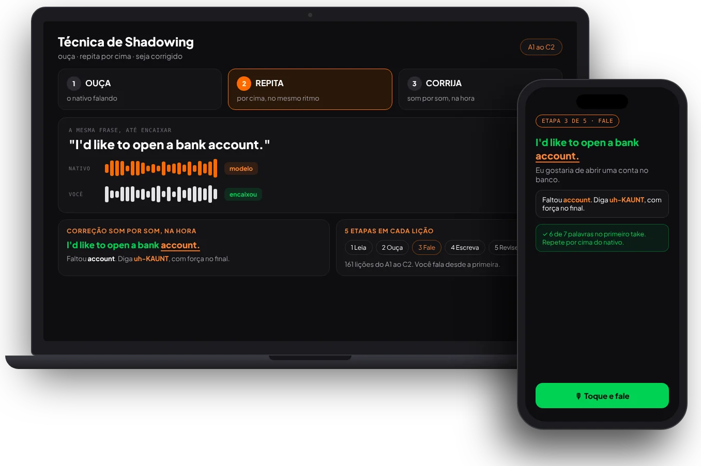
Modo Nativo
é o curso que te faz falar desde a primeira lição
Construído em cima da Técnica de Shadowing, a mesma que intérpretes e poliglotas usam para treinar a fala.
- Você ouve a frase de um nativo e repete por cima, imitando o ritmo e a entonação.
- O app escuta a sua voz e corrige a pronúncia na hora, som por som.
- São 5 etapas em cada lição: Leia, Ouça, Fale, Escreva e Revise.
- 805 aulas práticas do A1 ao C2, em blocos de 15 minutos por dia.
“Você não decora inglês. Você treina a sua boca a fazer os sons, do mesmo jeito que aprendeu a falar português quando era criança: ouvindo e repetindo.”
Recapitulando… Veja tudo que você vai receber
Tudo isso deveria custar R$669
Mas você pode destravar seu acesso imediato
ao Curso Do Zero à Conversação por apenas…
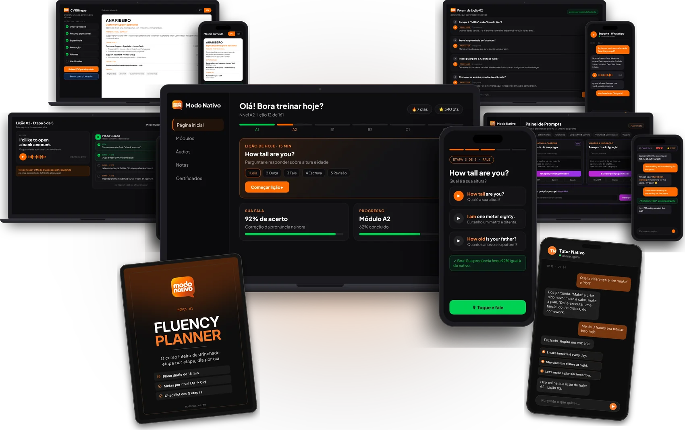
Do Zero à Conversação
Por apenas 9x de
ou R$ 67,00 à vista
De R$ 297,00 · lote de lançamento para os 100 primeiros alunos
SIM, QUERO APROVEITAR A OFERTASegura
7 dias
Protegida
Olha, vou ser bem direto com você…
Se você chegou até aqui é porque realmente quer mudar a sua relação com o inglês.
Você sabe que não é só sobre aprender inglês.
É sobre parar de travar na hora de falar, não deixar mais passar a vaga, a viagem e a reunião, e finalmente se sentir seguro quando alguém falar com você em inglês.
Por isso, confie em mim. Eu vou te ajudar com um método simples, prático e que cabe em 15 minutos por dia.
Você está pronto para parar de ensaiar frases na cabeça e começar a falar inglês sem travar?
Se sim, toque agora no botão abaixo e garanta sua vaga no Curso Do Zero à Conversação!
Compre agora e receba seu acesso no e-mail imediatamente!
ACESSE SEU E-MAIL
Assim que finalizar sua compra, você recebe o seu acesso no e-mail.
ENTRE NO DO ZERO À CONVERSAÇÃO
Você recebe o curso e todos os bônus na hora, para começar a sua primeira lição já nos próximos minutos.
TUDO PRONTO!
Agora é só treinar 15 minutos por dia e começar a falar inglês sem travar.
Do Zero à Conversação
Por apenas 9x de
ou R$ 67,00 à vista
De R$ 297,00 · lote de lançamento para os 100 primeiros alunos
SIM, QUERO APROVEITAR A OFERTASegura
7 dias
Protegida
7 dias para testar. O risco é todo nosso.
Entre, faça o nivelamento e as primeiras lições, grave sua voz. Se não sentir que esse é o caminho, peça o reembolso em até 7 dias e devolvemos 100%, sem perguntas.